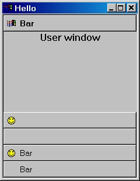
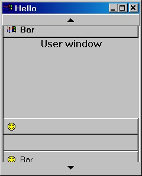

Скачать откомпилированный
пример - 30 Kb 
Введение
Такой эффект ещё используется в Windows, при
нажатии на кнопку Пуск (Start), если все пункты меню
не влезают на экран, то высвечиваются
дополнительные бары, позволяющие прокручивать
меню.
Требования
- ATL v3.0 и выше
- commctrl.dll версии 4.71 и выше
- поддержку STL включений
- поддержку CRT включений (только для демонстрашки)
- любой компилятор C++ совместимый
- MS Platform SDK
Внимание: данный пример использует ключевый
слова компилятора MS Visual C++ (типа #pragma ) , но
они могут быть легко переправлены для любого Win32
совместимого компилятора.
CButtonEx (наследуется от CWindowImpl; файл: ButtonEx.h)
Класс CButtonEx позволяет Вам создать кнопки
с иконками и описанием(caption). Когда кнопка
активируется, путём установки переменной m_bIsActive
в true, класс рисует caption используя шрифт bold.
Иначе используется GUI шрифт по умолчанию.
CWinch (наследуется от CWindowImpl; файл: Winch.h,Winch.cpp)
Класс CWinch служит для создания собственно
самого окна наподобие MS Outlook's "Outlook Bar". Окно
содержит кнопки-полоски с связанными с ними
окошками. Когда пользователь кликает на полоску,
то она перемещается вверх или вниз вместе со
своим окошком. Вы можете добавлять и удалять
полоски..
CWinchCtrl (наследуется от CWindowImpl; файл: WinchCtrl.h)
Класс CWinchCtrl расширяет возвожности данного
элемента управления, имеет функции-члены типа
CWinch и обеспечивает доступ к его методам.
Как использовать этот элемент управления
Во-первых, Вам придётся добавить в Ваши
исходники файл ‘WinchCtr.h'. Создать объект CWinchCtrl в
стёке или динамически, используя оператор new.
Затем вызвать метод Create() класса CWinchCtrl для
создания окна объекта. Теперь Вы можете
добавлять или удалять бары, вызывая AppendBar()
и RemoveBar(), соответственно. Перед
добавлением, Вам потребуется создать для каждого
бара своё окно и и связать его с баром. Так же Вы
можете делать активной любую полосу, вызывая
функцию ActivateBar(). И в заключении, Вы можете
получать и устанавливать описание (caption) для
любой полосы. Запомните, что после добавления
полосы невозможно будет изменить иконку полосы.
Если Вы не хотите, чтобы полоса имела иконку, то в
параметре иконки укажите NULL. Также можно
создавать полоски без описания (caption).
Как уже упоминалось, с каждой полоской связано
отдельное окно, и его Вам придётся создать.
Каждое такое окно может быть как обычным
элементом управления Windows, так и пустым окном, а
также это может быть MFC-окно, имеющее
определённые ограничения - на чтение. Класс CWinch
будет отражать все уведомительные сообщения
(WM_NOTIFY) обратно в созданное окно для
полоски. Внимание! Если Ваше MFC окно основано на
отражающих сообщениях MFC (т.е. используя макрос ON_NOTIFY_REFLECT[EX])
- это не будет работать. В данном случае Вы должны
обработать сообщения, отраженные CWinch, используя
обычную макрокоманду ON_NOTIFY. Чтобы быть уверенным,
что Вы получили отражённое сообщение, проверьте
аргумент wParam сообщения WM_NOTIFY – это
будет тот же идентификатор (ID) с которым было
создано окно.
Настройка
В файле ‘Common.h' содержится несколько констант,
которые упростят Вам жизнь:
CX_ICON, CY_ICON – габариты маленькой
иконки.
CY_BARBUTTON_HEIGHT – высота полоски. Если
полоски плохо выглядят в Вашей системе, то данная
константа как раз поможет откорректировать их.
Естевственно, полоса не может быть уже, чем
иконка, которую она содержит.
CX_3DBORDER, CY_3DBORDER – эта константа
поможет правильно отобразить полоску в нажатом и
отпущенном состояниях.
ACCELERATE(val) – данная макро-команда
ускоряет приращение движения, когда встречается
анимация скроллинга.
SCROLL_SPEED – эта константа определяет
задержку между кадрами анимации ("frames") в
функции SmoothScroll(). Я пробовал различные значения
под Win2K, WinMe и Win95. Вообще-то, если компьютер
достаточно мощьный, то оптимальное значение
будет 15ms.
WM_INVALIDATE, WM_REDRAW – зарегистрированные сообщения,
используемые с функцией SendMessageToDescendants(). Можно
конечно обойтись и без них, но тогда для каждой
кнопки полоски надо вызывать InvalidareRect() и RedrawWindow().
Мне это было слишком лениво :).
ATLVERIFY(exp) – удивительно, что ATL не поддерживает
данную макро команду. Так что я скопировал один
из них из MFC.
Miscellaneous
Я оставил файл .opt в примере, для того, чтобы
сохранить организацию дерева в ClassView.